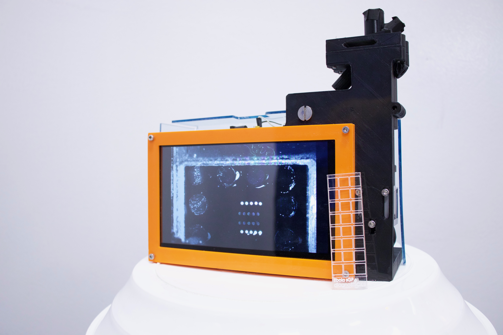

| Project Abstract PDF |

|
Why the detector is needed:
The D4 is fabricated such that all reagents are “on-chip,” stable without the need for cold-storage, and can identify protein biomarkers within a drop of blood. However, the fluorescent microarray imaging detector needed to readout the D4 assay is expensive, bulky, slow, and unable to be used at the POC. Therefore, there is a need for a low-cost, sensitive, and POC device capable to reading out the fluorescent D4 to democratize access to biomarker quantification for global health. The hardware needed for a novel fluorescent scanner exists in abundance. Imaging sensor development has exploded in the past decade due to mass adoption of and high demand for smartphone cameras. Each year, these sensors become smaller, more sensitive, higher resolution, and lower-cost, following a Moore’s Law-like trend [3]. Additionally, laser diode development follows a similar trend with continual improvement in power stability, cost, and performance [4]. Coupled together with 3D printed parts, these modern hardware components can outperform traditional microarray scanning modalities at a fraction of the cost, bulk, yet maintaining sensitivity for detection.
What we have done so far (what it is and how it works):
The Chilkoti lab has been developing a mobile fluorescent microscope that images the D4 chip. We have designed the detector to use low-cost optical elements, rechargeable battery packs, a computer on a chip, and a touchscreen housed in a 3D-printed frame; this offers an economical (<$1000 in bulk), modular, and portable platform for visualization and quantitation at the POC. The current iteration of prototype is an epifluorescence configuration via oblique angle laser illumination of the D4 chip, with a high-quality band-pass filter to eliminate non-fluorescent light, and a CMOS camera module for detection. These optical elements are coupled to a simple and portable LattePanda Windows 10-Arduino computer-on-a-chip, which handles image processing and delivers a user interface through a connected touchscreen. The laser and computer are powered by a RavPower rechargeable battery. Several dose-response curves were generated using run D4 assays with known test concentrations to determine the detector limit-of-detection for various biomarkers, and to ensure accuracy is consistent with standard detectors. We have been able to demonstrate a limit of detection of 0.08 ng/mL of alpha-fetoprotein in human serum using the detector, with a correlation coefficient of 0.99 compared to the gold standard detector readout. Additionally, we’ve been able to beat the limit of detection for a D4 assay against Ebola coat protein by 0.01 ng/mL. The detector is undergoing further validation and testing with our Ebola platform in a BSL-4 lab in Galveston, TX.
2017 PNAS paper about the D4: Inkjet-printed point-of-care immunoassay on a nanoscale polymer brush enables subpicomolar detection of analytes in blood. |
|
|
| BMES 2019 Abstract submission: |
| Duke Biomedical Engineering Retreat Poster: |
Code, 3D STL files, and more:
|